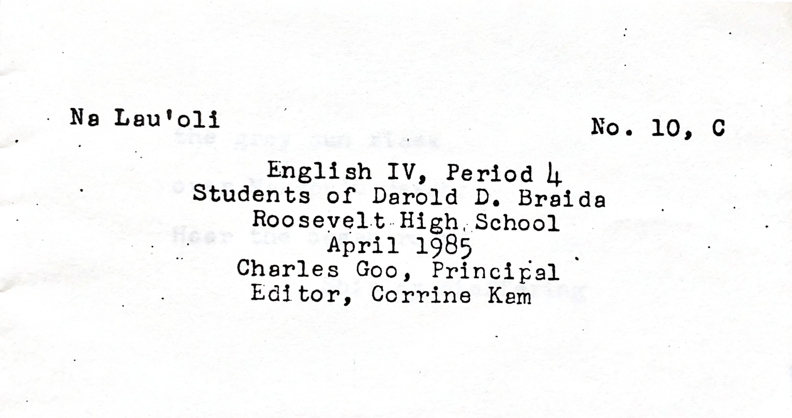
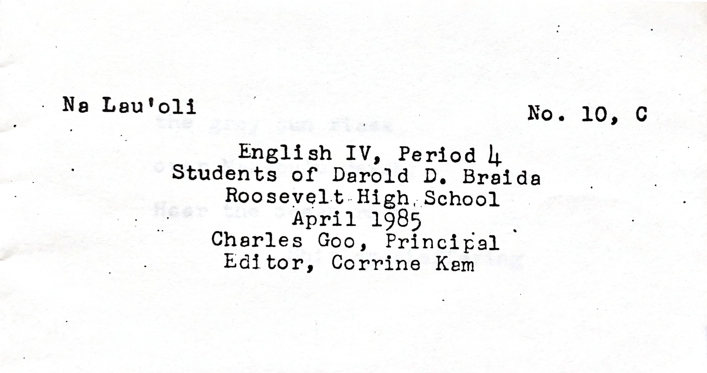
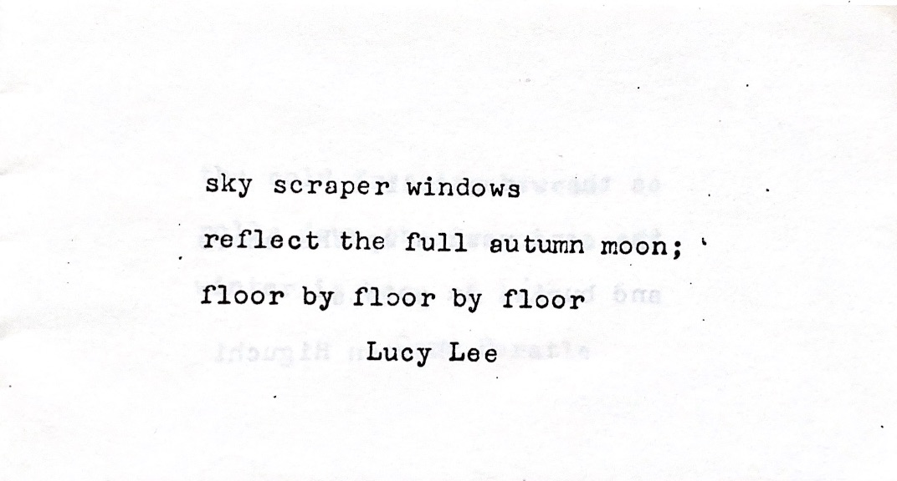

Mom's High School Haiku
The '80s high rise.
February 19th, 2024
There's nothing I love more than an experience that can transport you to another place, or better yet, another time. My nostalgia more often takes the form of nostalgia for times I've never experienced, times whose eras and auras I've gleaned from movies, songs, books, and my favorite, my mom's descriptions of her childhood. In the summer of 2021, I found her stash of mementos in a sun-faded Fila shoebox, from which I dug out a hand-bound booklet titled "Na Lau'oli" ("Singing Leaves").
 

In the April of 1985, Mr. Braida of Roosevelt High School in Honolulu, Hawaii collected with care the haikus of his fourth period junior year English class into appropriately leaf-sized booklets and handed them out to each one of his students whose tentative prose was cherished inside. 36 years later, one of these booklets would still remain in a student's possession, my mom's, and be discovered by me, her daughter, as a high school junior. Leafing through the pages, I found my mom's haiku on one of the first pages:
No poetry critic, I tried my best to see this poem from her point of view. "Her" being my 16-year-old mom who had written this haiku, laboriously re-penciling and re-erasing to get every syllable right, rushing to get her homework done after school so she and her siblings could go play at their favorite arcade on the top floor of a Waikiki hotel. I thought of the gleaming skyscraper she was picturing (maybe the hotel), the Hawaiian summer nights, and of the world that was hers. The siblings crowding around to watch MTV on a Friday night staring at neon lights flash across the screen, Pacman and pinball, the Bananarama "Cruel Summer" music video, and in the mainland cities too, the Madonna-wannabes strutting alongside the Gordon-Gekko-lookalikes: the upwards-gazing 80s dreamers with stars in their eyes.
On that day, I made my first era-specific playlist and found the perfect playlist cover on Pinterest to match:
Darold D. Braida passed in 2015 at 86. After Googling him (I know), I found his obituary truly touching. Was my mom a "throw away kid"?
There she is in the front row, third from the left!
8/17/24 UPDATE:
On our trip to Hawaii last week, we drove through Kaimuki, my mom and her five siblings' first neighborhood in Oahu, and checked out Liholiho Elementary School 44 years later. This is the tree that picture was taken under!
And here's the building in Waikiki whose top floor held their arcade. Maybe it wasn't a hotel, after all.